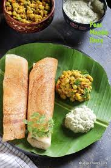

Udupi Masala Dosa

Description
Udupi Masala Dosa is a renowned South Indian dish originating from Udupi, Karnataka. This crispy, golden-brown dosa is filled with a spiced potato filling and is traditionally served with coconut chutney and sambar.
Ingredients
For the Dosa Batter:
- 1 cup raw rice
- 1 cup idli rice
- ½ cup urad dal (split black gram)
- 2 teaspoons toor dal (pigeon peas)
- 2 teaspoons chana dal (split chickpeas)
- ¼ cup poha (flattened rice)
- Salt, as needed
For the Red Chutney:
- 3 tablespoons chana dal
- 7 dried red chilies (adjust to taste)
- 5 garlic cloves
- 2 small onions (shallots)
- Salt, as needed
For the Potato Filling:
- 3 large potatoes
- 1 onion, finely chopped
- 2 tablespoons finely chopped carrots (optional)
- 2 green chilies, finely chopped
- 1 tablespoon finely chopped ginger
- ⅛ teaspoon turmeric powder
- Salt, as needed
For Tempering:
- 1 tablespoon oil
- ½ teaspoon mustard seeds
- 1 teaspoon urad dal
- 2 teaspoons chana dal
- 5 cashews
- 1 sprig curry leaves
Steps
Preparing the Dosa Batter:
- Rinse the raw rice, idli rice, urad dal, toor dal, and chana dal together. Soak them in water for about 3 hours.
- Soak the poha separately for 15-20 minutes before grinding.
- Drain the soaked ingredients and grind them with the soaked poha and necessary water to achieve a smooth batter consistency.
- Add salt to the batter, mix well, and let it ferment overnight or for about 12 hours.
Preparing the Red Chutney:
- In a pan, dry roast the chana dal and dried red chilies until aromatic.
- Add the garlic cloves and shallots, sautéing for a couple of minutes.
- Allow the mixture to cool, then grind it with salt and a little water to form a thick, spreadable chutney.
Preparing the Potato Filling:
- Boil the potatoes until tender, peel, and roughly mash them.
- Heat oil in a pan and add mustard seeds. Once they splutter, add urad dal, chana dal, cashews, and curry leaves. Sauté until the dals turn golden brown.
- Add the chopped ginger, green chilies, onions, and carrots. Sauté until the onions become translucent.
- Stir in the turmeric powder and salt.
- Add the mashed potatoes, mix well, and cook for a few minutes. Set aside.
Making the Masala Dosa:
- Heat a dosa tawa (griddle) and lightly grease it.
- Pour a ladleful of the fermented batter onto the center of the tawa and spread it outwards in a circular motion to form a thin dosa.
- Drizzle a little oil or ghee around the edges and on top of the dosa.
- Once the dosa starts turning golden brown, spread a spoonful of the red chutney evenly over it.
- Place a portion of the potato filling in the center of the dosa.
- Fold the dosa over the filling and serve hot with coconut chutney and sambar.
Home